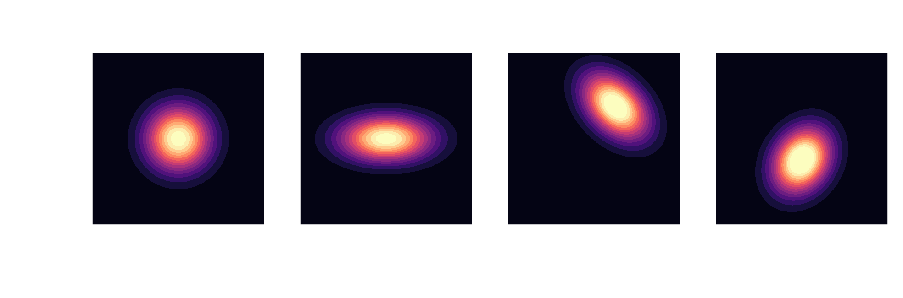
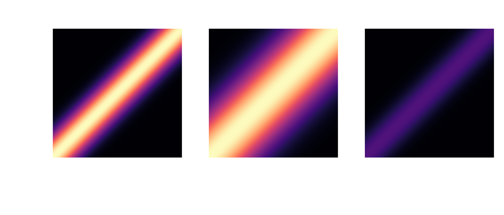

| 01 | Gaussian processes (GP) from Gaussians distributions to GPs |
| 03 | example 1: GAMG settings optimal solver settings for fast simulations |
| 04 | example 2: heat exchanger balancing pressure loss and heat transfer |
process with $d$ random variables
$\boldsymbol{X} = \left[X_1, X_2, \ldots, X_d \right]^T$, $\boldsymbol{X} \in \mathbb{R}^{d\times 1}$
expectation (mean value)
$\mu_i = \mathbb{E}\left[X_i\right]$, $\boldsymbol{\mu} = \left[\mu_1, \mu_2, \ldots, \mu_d\right]^T$, $\boldsymbol{\mu} \in \mathbb{R}^{d\times 1}$
covariance
$\sigma_{ij} = \mathbb{E}\left[(X_i-\mu_i)(X_j-\mu_j)\right]$, $\mathbf{\Sigma} \in \mathbb{R}^{d\times d}$
multivariate Gaussian distribution
$$ p(\mathbf{x}) = \frac{1}{\sqrt{(2\pi)^d \mathrm{det}(\mathbf{\Sigma})}}\mathrm{exp}\left( -\frac{1}{2}(\mathbf{x}-\boldsymbol{\mu})^T\mathbf{\Sigma}^{-1}(\mathbf{x}-\boldsymbol{\mu}) \right) $$
Gaussians are closed under conditioning
$$ \boldsymbol{\mu}=\begin{bmatrix} \boldsymbol{\mu}_A \\ \boldsymbol{\mu}_B \end{bmatrix}, \quad \mathbf{\Sigma} = \begin{bmatrix} \mathbf{\Sigma}_{AA} & \mathbf{\Sigma}_{AB}\\ \mathbf{\Sigma}_{BA} & \mathbf{\Sigma}_{BB} \end{bmatrix} $$
$$ \boldsymbol{\mu}_{A|B}= \boldsymbol{\mu}_A + \mathbf{\Sigma}_{AB}\mathbf{\Sigma}^{-1}_{BB}\left(\mathbf{x}_B-\mathbf{\mu}_B\right) $$ $$ \mathbf{\Sigma}_{A|B} = \mathbf{\Sigma}_{AA} - \mathbf{\Sigma}_{AB} \mathbf{\Sigma}^{-1}_{BB} \mathbf{\Sigma}_{BA} $$ posterior $\quad\mathbf{X}_{A|B} \sim \mathcal{N}(\boldsymbol{\mu}_{A|B}, \mathbf{\Sigma}_{A|B})$
from multivariate Gaussians $$ \boldsymbol{X} \sim \mathcal{N}(\boldsymbol{\mu}, \mathbf{\Sigma}) $$
... to Gaussian processes $$ f(\boldsymbol{x}) \sim \mathcal{GP}(m(\boldsymbol{x}), k(\boldsymbol{x}, \boldsymbol{x}^\prime)) $$
RBF kernel: $ \quad k(x, x^\prime) = \sigma^2 \mathrm{exp}\left(-\frac{|x - x^\prime|^2}{2l^2}\right) $
joint work with:
GAMG - generalized geometric algebraic multigrid
excellent introduction by Fluid Mechanics 101
full GAMG entry in fvSolution
p
{
solver GAMG;
smoother DICGaussSeidel;
tolerance 1e-06;
relTol 0.01;
cacheAgglomeration yes;
nCellsInCoarsestLevel 10;
processorAgglomerator none;
nPreSweeps 0;
preSweepsLevelMultiplier 1;
maxPreSweeps 10;
nPostSweeps 2;
postSweepsLevelMultiplier 1;
maxPostSweeps 10;
nFinestSweeps 2;
interpolateCorrection no;
scaleCorrection yes;
directSolveCoarsest no;
coarsestLevelCorr
{
solver PCG;
preconditioner DIC;
tolerance 1e-06;
relTol 0.01;
}
}
optimal settings depend on
$\rightarrow$ high-dim. search space with uncertainty
reduce runtime without sacrificing accuracy
PIMPLE
{
...
residualControl
{
"(U|p)"
{
relTol 0;
tolerance 1e-05;
}
}
}
elapsed time for 50 steps; 2D cylinder flow
implementation outline
search space definition in config.yaml
smoother:
name: "smoother"
type: "choice"
value_type: "str"
is_ordered: False
sort_values: False
values: ["FDIC", "DIC", "DICGaussSeidel", "symGaussSeidel", "nonBlockingGaussSeidel", "GaussSeidel"]
nFinestSweeps:
name: "nFinestSweeps"
type: "range"
value_type: "int"
bounds: [1, 10]
...
~10-15% runtime reduction
joint work with:
data-driven modeling SIG
github.com/OFDataCommittee/openfoam-smartsim